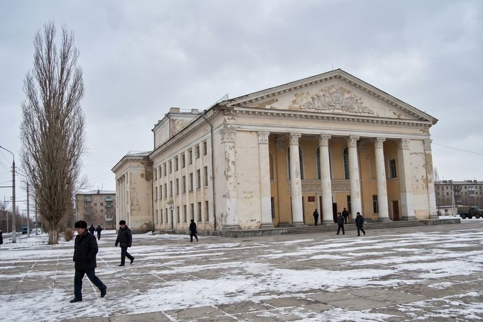

Афиша на ноябрь 2026

Дорогие зрители! 88-й театральный сезон продолжается. В ноябре — премьера сезона, «Без вины виноватые» Островского в постановке Вероники Полищук, и любимые спектакли репертуара.Внимание! 15 ноября в 12:00 — детский спектакль для школьных групп. Заявки по тел. 3-22-41-90.
| Дата | Начало | Спектакль | Возраст |
|---|---|---|---|
| 7 ноября, сб | 18:00 | А. Н. Островский «Без вины виноватые» | 12+ |
| 8 ноября, вс | 17:00 | А. П. Чехов «Три сестры» | 14+ |
| 14 ноября, сб | 18:00 | А. Вампилов «Старший сын» | 12+ |
| 15 ноября, вс | 12:00 | по сказке С. Маршака «Двенадцать месяцев» | 0+ |
| 21 ноября, сб | 18:00 | Н. В. Гоголь «Ревизор» | 12+ |
| 22 ноября, вс | 17:00 | А. Н. Островский «Без вины виноватые» | 12+ |
| 28 ноября, сб | 18:00 | М. Горький «На дне» Спектакль отменён по болезни актёра. Билеты принимаются в кассе или обмениваются на 29 ноября. | 16+ |
| 29 ноября, вс | 17:00 | А. П. Чехов «Три сестры» | 14+ |
| с 20 декабря | 11:00, 14:00 | Новогодняя ёлка «Морозко» | 0+ |
Цены на билеты: 150–400 сом, детские спектакли 100 сом. Продолжительность спектаклей уточняйте в кассе.
Новости театра
02.11.2026. Театр вернулся с осенних гастролей по районам (Кара-Буура, Сары-Булак, Токтогул). Спасибо Фонду «Көркөм» за поддержку!
15.10.2026. Премьера: «Без вины виноватые». Режиссёр — Вероника Полищук, художник — Сергей Ли.
01.10.2026. Открытие 88-го сезона.